portfolio:
Visualizing Likelihood Density Functions via Optimal Region Projection
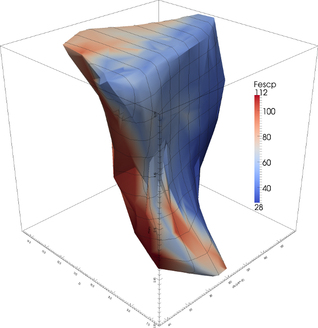
Hal Canary, Russell M. Taylor II, Cory Quammen, Scott Pratt, Facundo A. Gómez, Brian O'Shea, Christopher G. Healey. “Visualizing Likelihood Density Functions via Optimal Region Projection.” Computers & Graphics 41 (2014): 62-71.
Abstract: Effective visualization of high-likelihood regions of parameter space is severely hampered by the large number of parameter dimensions that many models have. We present a novel technique, Optimal Percentile Region Projection, to visualize a high-dimensional likelihood density function that enables the viewer to understand the shape of the high-likelihood region. Optimal Percentile Region Projection has three novel components: first, we select the region of high likelihood in the high-dimensional space before projecting its shadow into a lower-dimensional projected space. Second, we analyze features on the surface of the region in the projected space to select the projection direction that shows the most interesting parameter dependencies. Finally, we use a three-dimensional projection space to show features that are not salient in only two dimensions. The viewer can also choose sets of axes to project along to explore subsets of the parameter space, using either the original parameter axes or principal-component axes. The technique was evaluated by our domain-science collaborators, who found it to be superior to their existing workflow both when there were interesting dependencies between parameters and when there were not.
Percentile Surface Filter
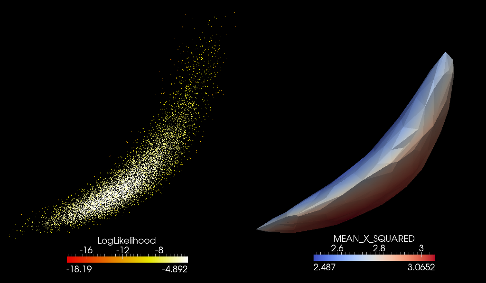
Given a set of points in space with a scalar value, this filter will create a surface around the top P percentile of the points. In this example, the top 95% of the points (by logLikelihood) are used. This VTK filter is included in the MADAI Visualization Workbench
Matplotlib Scatterplot Matrix Script

One standard way to visualize a multi-dimensional dataset is the scatterplot matrix. The datasets produced by Markov-chain Monte Carlo explorations of 3- to 20-dimensional space have millions of points — too many for a glyph at each point. This script displays the density at each projected point. The upper-right side plots the log of the density to highlight low-density regions.
VTK Viewer
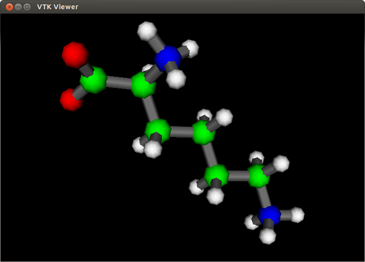
My VTK Viewer VTK/Qt/C++ program lets you quickly view several 3D file formats (VTK, PLY, OBJ, STL, or PDB). I also have a VTK/Python version of the same program. It can be found at https://github.com/HalCanary/vtkviewer.
Word Count Journal
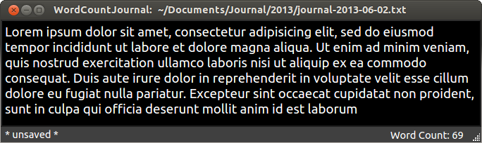
A Python/Qt single-file text editor that counts words. I use it to write a journal entry each morning. It can be found at https://github.com/HalCanary/WordCountJournal.
Teardrop Glyphs as 3D Arrows
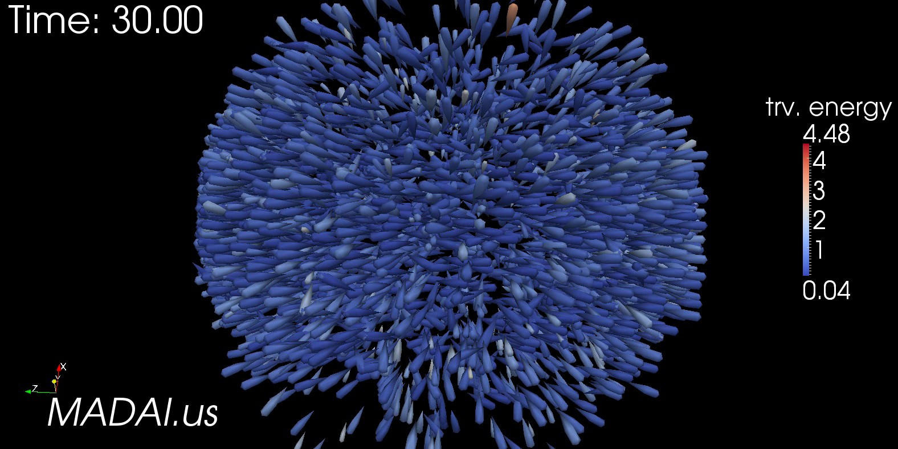
Arrow Glyphs introduce a lot of visual clutter, especially when there are many of them. The teardrops glyph is the 3D version of the "anisotropic splat." Here is one frame from a movie depicting particles in a high-energy collision; glyph direction and size represent momentum. teardrop.obj
Banded Level Colormap ParaView Macro
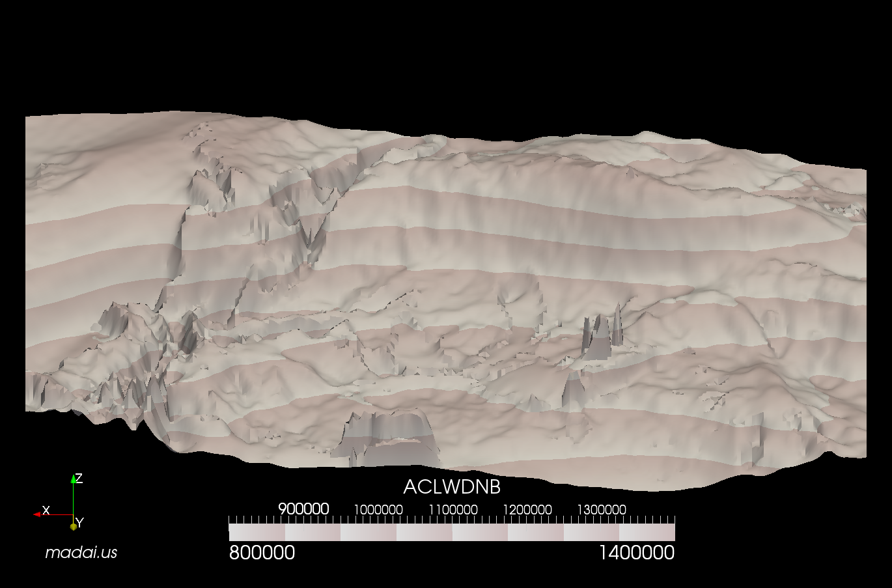
My Banded_Level_Colormap ParaView macro was inspired by Van Wijk and Telea's Enridged Contour Maps. This macro is included in the MADAI Visualization Workbench.
3D Frame ParaView Macro
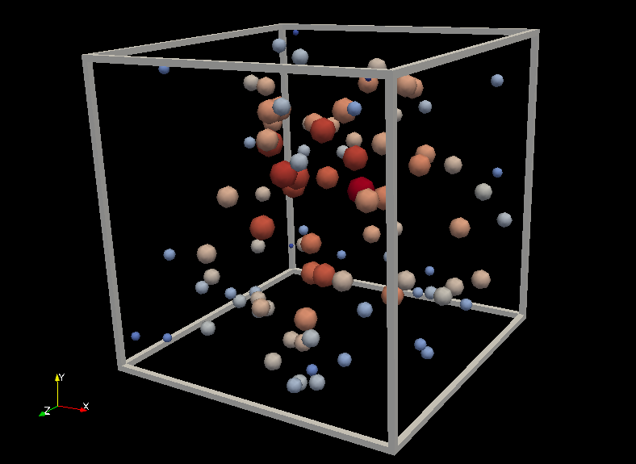
Drawing a frame around objects in space can serve to add context to improve perception. We know that the visual system is tuned to perceive shaded surfaces. Therefore, a frame built from polygons will help the most with the perception of depth. I wrote a ParaView macro that generates a frame based on the bounding box of the currently active dataset.
Hephaestus Scanner
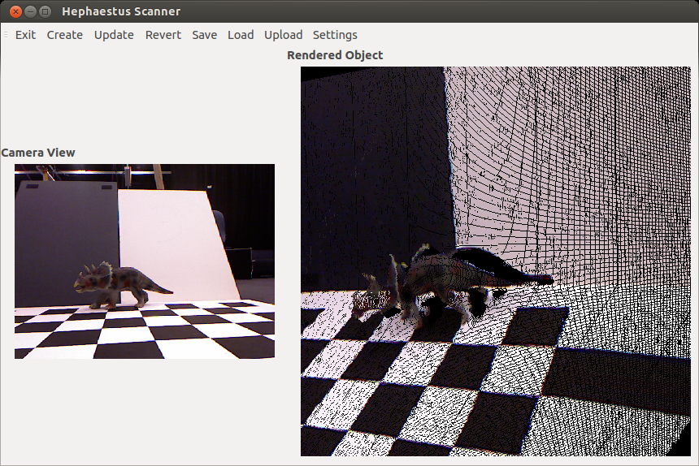
For a class project, I wrote a content acquisition application that makes use of the Microsoft Kinect and the Point Cloud Library to construct a digital representation of a scene in VTK format and uploads it to a MIDAS backend server that stores and manages the collection of scenes from users and organizations. This project can be found at github.com/HephaestusVision/.
Visualizing the QCD Critical Point with the Gaussian Scalar Splatter
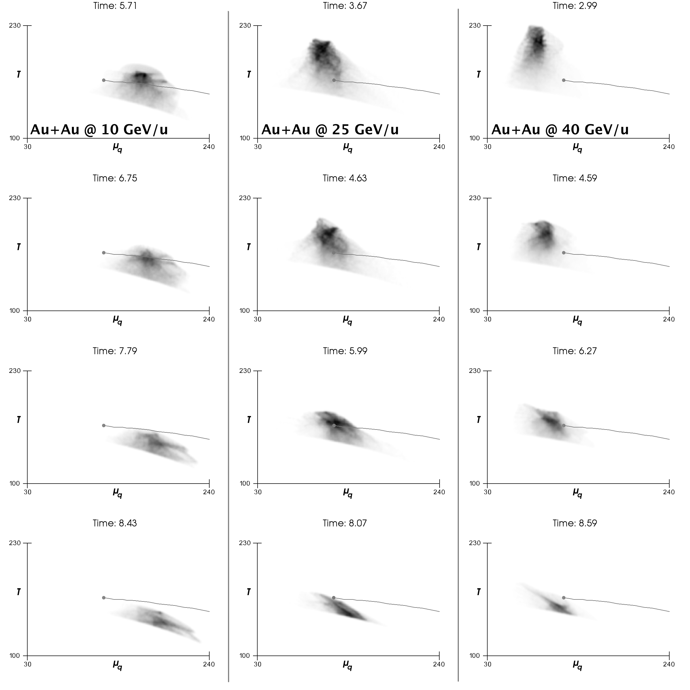
My Gaussian Scalar Spatter Filter was used to visualize the critical point in the phase space of QCD matter in this paper.
Caption: Time evolution (top to bottom) of QCD matter created in central Au+Au collisions at 10 (left), 25 (center) and 40 (right) GeV/u beam energy projected into the T − μq phase diagram. The gray shading represents the amount of matter present at the respective value of T and μq.
Steffen A. Bass, Hannah Petersen, Cory Quammen, Hal Canary, Christopher G. Healey, Russell M. Taylor II. "Probing the QCD Critical Point with Relativistic Heavy-Ion Collisions." Central European Journal of Physics (2012) 10, 1278-1281.
My Gaussian Scalar Spatter Filter is included in the MADAI Visualization Workbench.
2D Gaussian Spatter
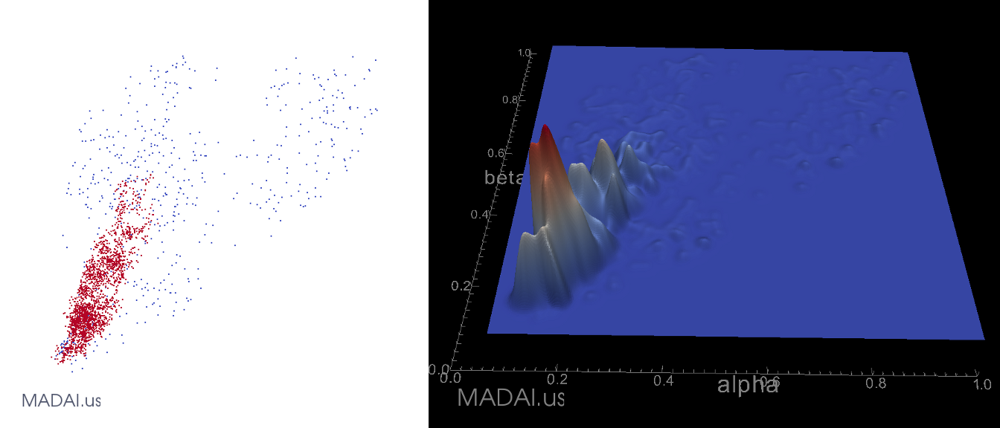
This is a comparison of two different ways to visualize a set of points in two dimensions. By warping a surface by splatted density, it is easier to perceive relative densities.
My Gaussian Scalar Spatter Filter is included in the MADAI Visualization Workbench.
Visualizing Significant Differences
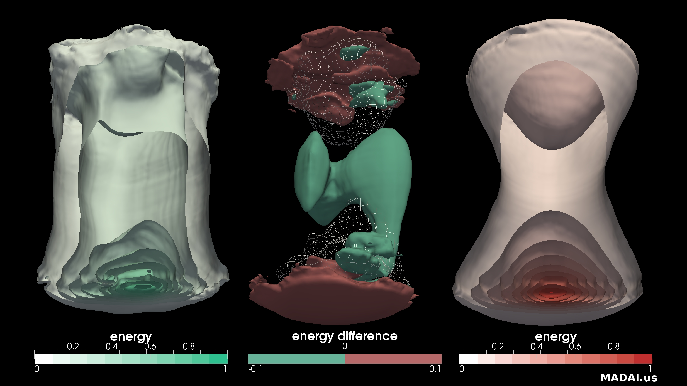
This shows the differences between two hydrodynamic simulations of gold-nucleus collisions developed by Hannah Petersen and Steffen Bass. The side images each depict energy levels within a single 3D simulation, with the remnants of two nuclei flying towards the top and bottom of the screen, leaving a quark-gluon plasma in between. Wedges of the volume have been carved away, like removing a wedge from an onion to reveal internal structure. The center image shows two surfaces, one where the energy from the left simulation is higher, and one where the energy from the right simulation is greater. It also shows one surface from the left-hand simulation as a wire-frame mesh for context. Our collaborators want to understand the impact of changing simulation parameters on the resulting time-varying simulation. These techniques, which have been implemented as plug-ins for the open-source ParaView visualization application, are used by our collaborators studying particle collisions and weather simulation to make their simulations better match experimental results and to improve comprehension of the underlying physics.
These two techniques (onion slices on the side images, wireframe/contours on the central) were developed specifically for this type of data analysis in the spring of 2011 in a course on scientific visualization at UNC. This particular combination of occlusion and wire-frame transparency highlights the answers to the questions posed by the scientists in fresh ways that enable them to more easily gain insight into their science.
Ensemble Surface Slicing
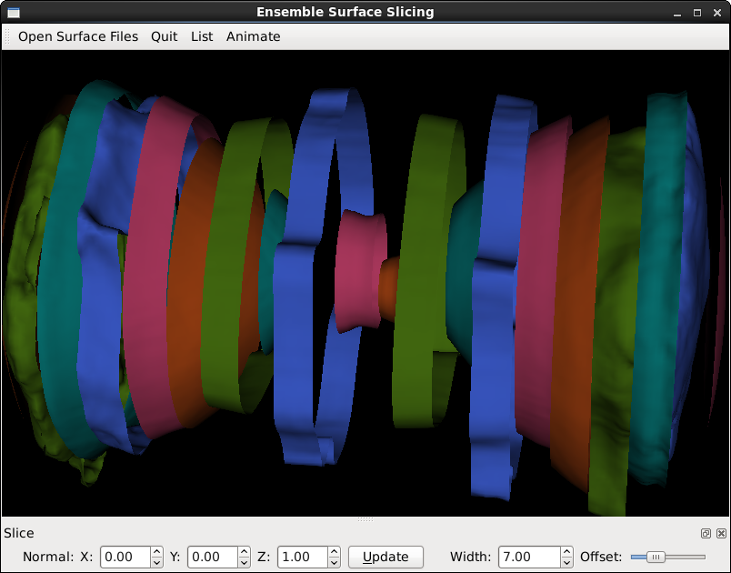
This is an implementation of Ensemble Surface Slicing, a technique developed by Oluwafemi Alabi.
Ensemble_Surface_Slicing.py is a VTK+Python+QT program that enables a user to load several VTK surface files files and adjust the width of the slices, the direction of the slice plane, and the offset from the origin of the first slice. For COMP770 (Computer Graphics), I wrote up a report detailing the development of this software.
This functionality has been incorporated into the MADAI Visualization Workbench.
Ray Tracer
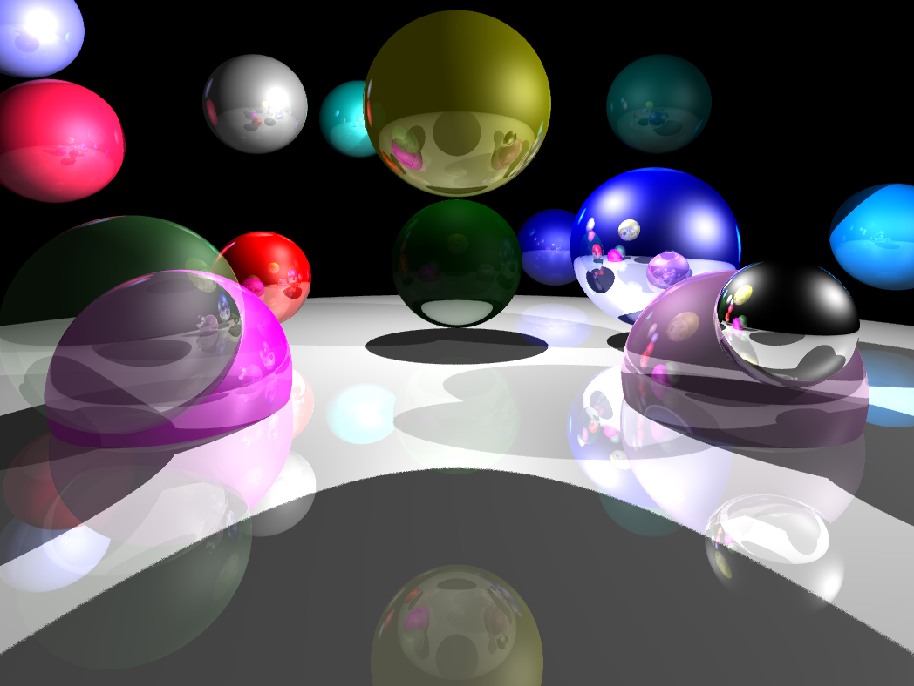
I implemented a ray tracer for COMP770 (Computer Graphics).
ARPS Weather Visualization
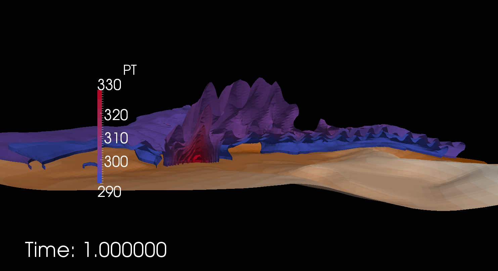
In 2011, I worked with meteorologists to develop tools for visualizing weather simulation data. This is an example of ARPS data visualized in ParaView.
WRF Weather Visualization
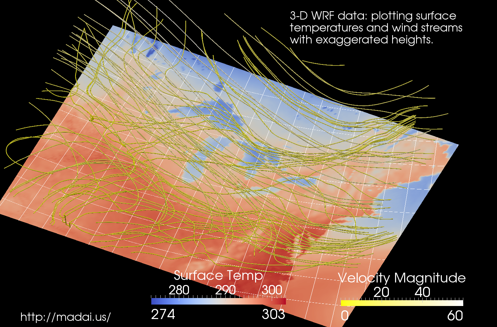
In 2011, I worked with meteorologists to develop tools for visualizing weather simulation data. This is an example of WRF data visualized in ParaView.
Aztec Diamonds and Baxter Permutations
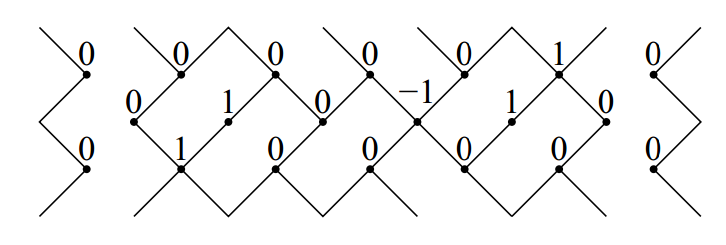
Hal Canary. "Aztec Diamonds and Baxter Permutations". The Electronic Journal of Combinatorics 17 (2010), #R105
Abstract: We present a proof of a conjecture about the relationship between Baxter permutations and pairs of alternating sign matrices that are produced from domino tilings of Aztec diamonds. It is shown that a tiling corresponds to a pair of ASMs that are both permutation matrices if and only if the larger permutation matrix corresponds to a Baxter permutation. There has been a thriving literature on both pattern-avoiding permutations of various kinds [Baxter 1964, Dulucq and Guibert 1988] and tilings of regions using dominoes or rhombuses as tiles [Elkies et al. 1992, Kuo 2004]. However, there have not as of yet been many links between these two areas of enumerative combinatorics. This paper gives one such link.